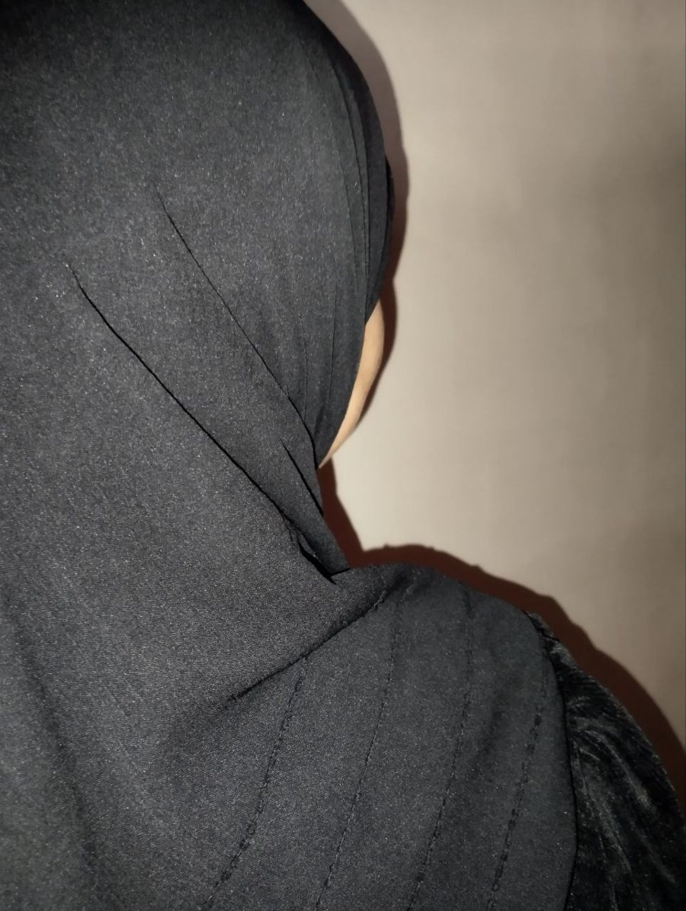

Jarayonda
Yangi kitob
Yangi kitob yozish ustida ishlayapmiz. Tez orada.

Qiziqishlarim:
Alisher Navoiy nomidagi Toshkent davlat oʻzbek tili va adabiyoti universiteti 2-kurs talabasi.
(Oʻrganishga doim ochiqmiz)
Turli ilmlarni oʻrganishni yaxshi koʻramiz. Vaqtdan unumli foydalanishga, turli madaniy-maʼrifiy joylarni kashf qilishga va ajdodlarimizni oʻrganishga harakat qilyapmiz.
Faoliyatim
Hozirda yangi kitob yozish ustida ishlayapmiz.
Tez orada
Arab tili fonetikasini bolalarga qiziqtirib, multfilm orqali oʻrgatish ustida ishlayapmiz.
Telegram kanalni ochishYaqinda tashkil qilganimiz koʻngillilar jamiyatchasi — kursdosh qizlarimiz bilan safarlar. Biz bilan bogʻlanib, birga safar qilishingiz mumkin.
BogʻlanishIshlarim
Jarayonda
Yangi kitob yozish ustida ishlayapmiz. Tez orada.
Qurilyapti
Bolalarga arab tili fonetikasini multfilm orqali qiziqarli oʻrgatamiz.
Telegram kanal →Savol-javob
Alisher Navoiy nomidagi Toshkent davlat oʻzbek tili va adabiyoti universiteti talabasimiz. Mumtoz adabiyot, Qurʼon ilmlari va vibecoding bilan qiziqamiz.
Telegramda @since1410 ga yozing. Javob beramiz.
@since1410 ga yozing — safarlar haqida aytib beramiz.
Loyiha hozir qurilyapti. Yangiliklar Telegram kanalimizda chiqadi.